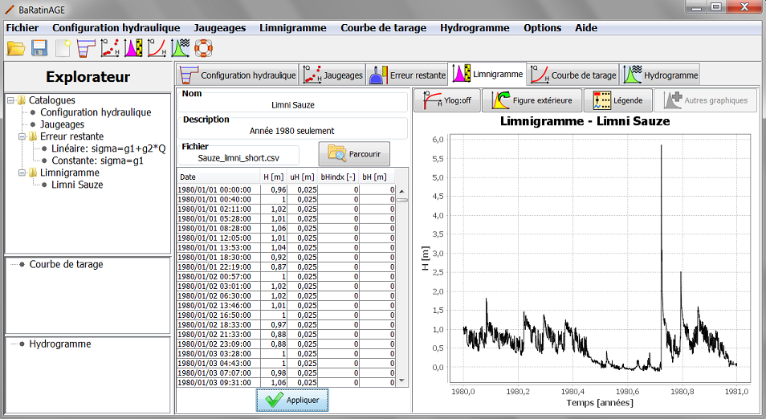

Vous pouvez créer un nouveau limnigramme de plusieurs façons :
Il vous sera demandé de nommer ce nouveau limnigramme, et vous pouvez en saisir une description. Il ne vous reste plus qu'à importer le fichier source en cliquant sur le bouton "Parcourir" et en sélectionnant le fichier de votre choix. A titre d'exemple, vous pouvez sélectionner le fichier "Sauze_limni_short.csv" dans le répertoire "exemple", qui contient un limnigramme pour l'Ardèche à Sauze pour l'année 1980. Le panneau se met alors à jour comme ceci :

Le tableau contient les colonnes suivantes :
Le traitement des incertitudes sur le limnigramme permet de différencier deux types d'erreurs: les erreurs non-systématiques (qui varient à chaque pas de temps) et les erreurs systématiques (qui restent identiques sur un ensemble de pas de temps). Typiquement, les erreurs non-systématiques sont associées au bruit du capteur et au batillage; les erreurs systématiques sont associées au recalage périodique du capteur par rapport à l'échelle de référence (pour une explication plus détaillée, voir ce document). Ce dernier type d'erreur constitue en fait un biais inconnu, qui est supposé constant entre deux recalages du capteur. Il faut donc spécifier deux informations :
Pour le limnigramme, un unique format de fichier est supporté pour le moment : le format .csv. Comme pour les jaugeages, il s'agit d'un format avec séparateur point-virgule (vous pouvez ouvrir le fichier "Sauze_limni_short.csv" dans votre éditeur de texte pour observer le format). Le contenu du fichier est exactement ce que vous voyez dans le tableau de BaRatinAGE représenté ci-dessus (à l'exception du fait que la date est ventilée sur 6 colonnes : année, mois, jour, heure, minute, seconde). La simplicité de ce format fait que vous pouvez aisément créer/manipuler des fichiers de limnigramme avec votre tableur favori.
A l'heure actuelle, le limnigramme ne peut pas être modifié directement dans BaRatinAGE : vous devez créer et modifier vous-même le fichier source au format .csv. Les futures versions de BaRatinAGE proposeront des outils plus développés pour la gestion du limnigramme et de ses incertitudes.
De plus, signalons que les fichiers de limnigramme peuvent devenir volumineux lorsque le pas d'échantillonnage est faible et/ou la durée est longue. Ceci peut créer un léger ralentissement pour le tracé du graphique. Ceci sera également amélioré dans les futures versions de BaRatinAGE en proposant des outils de sous-échantillonnage.